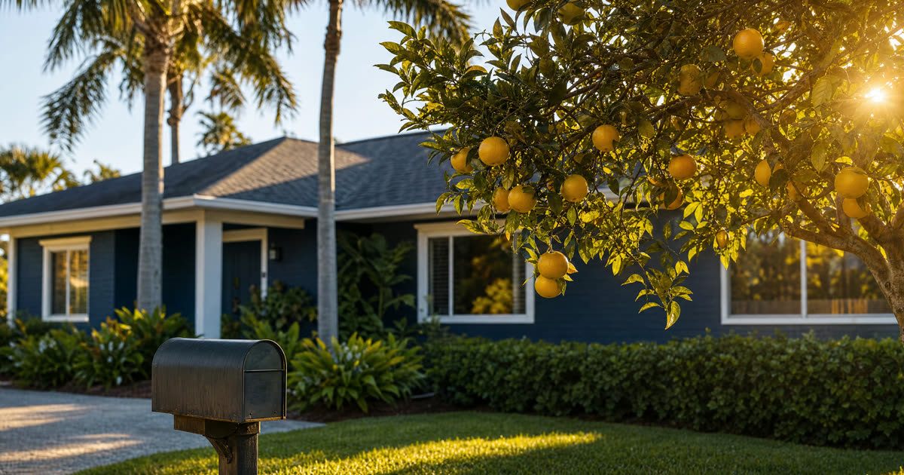

Meet Tom and Peggy
Tom and Peggy are 75 and 73, living in Edgewater in a house they've owned together for decades. They hold title as tenants by the entireties, the ownership form Florida law gives married couples by default, and they want the house to go to their two daughters once they're both gone. They're a composite example we use to walk through the mechanics, not an actual client, but their situation is about as common as it gets in our practice.
Tom and Peggy already have the basics down: a lady bird deed lets an owner keep full control of the home for life, including the right to sell it or revoke the deed outright, while the property passes to named beneficiaries at death without going through probate. What they want to know is how to set it up so nothing changes for either of them individually, and their daughters only step in at the very end.
Have this exact situation? Talk it through with a Florida attorney — the 20-minute consultation is free.
Book Free Consult or call (888) 388-8445Why Tenancy by the Entireties Matters Here
Tenancy by the entireties (often shortened to TBE) is the ownership form most married Florida couples use without even thinking about it. Under TBE, Tom and Peggy don't each own a half interest in the house. They own the whole thing together, as a single legal unit. When one of them dies, the survivor doesn't inherit a share, because there was never a separate share to inherit. The survivor simply continues owning the whole property, automatically, by operation of law.
This is important for how their lady bird deed should be written. TBE already solves the first-death problem: nothing needs to happen at Tom's death or Peggy's death, whichever comes first, for the survivor to keep the house. What TBE doesn't solve is the second-death problem. Once only one of them is left, that survivor owns the house outright, and without further planning, that house would need to go through probate before it reaches their daughters. The lady bird deed is aimed squarely at that second-death gap.
Structuring the Deed So the Survivor Keeps Everything
The way to accomplish what Tom and Peggy want is to have both of them sign as grantors, retaining a joint life estate with full rights of survivorship, and naming their two daughters as the remainder beneficiaries. Done correctly, the deed should say plainly that the surviving spouse continues to hold the entire life estate, with all the same reserved powers, after the first spouse's death.
- At the first death: nothing changes. The surviving spouse (say, Peggy, if Tom dies first) continues living in the house, continues to have full authority to sell, refinance, lease, or revoke the deed, and does not need permission from the daughters or anyone else.
- During joint lives: Tom and Peggy together can sell the house, change their minds about who inherits it, or revoke the deed entirely, exactly as they could before signing it.
- At the second death: the remainder interest that was already built into the deed becomes possessory. Title passes to Tom and Peggy's two daughters outside of probate, by operation of the deed itself, not by will or court order.
What the Surviving Spouse Can Still Change
Say Tom dies first. Peggy, now the sole owner, retains every power she and Tom had together: she can sell the house, take out a reverse mortgage, lease it, or revoke the lady bird deed and write a new plan entirely. The daughters named as remainder beneficiaries have no vested interest during Peggy's life. They have no say in what Peggy does with the property, and she owes them no notice or accounting.
This is one of the most reassuring features of the lady bird deed for older Florida couples: it never locks the surviving spouse in. If Peggy later needs to sell the house to move closer to a daughter, or wants to add a grandchild as a new beneficiary, or simply changes her mind, she can do all of that without anyone's consent. The deed is a plan for what happens if she does nothing further, not a permanent restriction on what she can do.
Creditor Protection During Joint Lives
Tenancy by the entireties carries a real, practical benefit for married Florida couples beyond avoiding probate: creditors of only one spouse generally cannot reach property held as TBE. If a creditor has a claim against Tom alone, the entireties home is typically protected while both spouses are alive and the marriage is intact. This protection is tied to the entireties form of ownership itself, not to the lady bird deed.
Once a lady bird deed is signed, the life estate the couple retains should be drafted to preserve that entireties character during their joint lives, so the creditor protection doesn't disappear simply because a deed naming remainder beneficiaries was recorded. This is a technical point worth having a Florida attorney confirm when the deed is drafted, because the details of how the life estate is held can matter.
The Second-Marriage Caution
Tom and Peggy's situation, a long marriage with shared children, is the easy case. The lady bird deed gets more complicated when one or both spouses have children from a prior relationship, or when the marriage is a second marriage for either party.
Because of this, remarried Florida homeowners, or those planning a second marriage later in life, should have their deed and overall estate plan reviewed with these homestead rules specifically in mind, rather than assuming the deed alone will sort out who gets the house.
When Tom and Peggy Should Re-Sign
Once Tom dies, Peggy does not need to record a brand new deed just because ownership passed to her by survivorship under the well-drafted joint lady bird deed. The remainder to the daughters remains intact, and Peggy remains the life tenant with full powers. Nothing about the deed's mechanics requires a fresh signature at that point.
Where re-signing does make sense is if Peggy's wishes change after Tom's death: if she wants to add a beneficiary, remove one, sell the house and buy another, or restructure her estate plan generally. At that point, a new deed, prepared with her current wishes and reviewed against her current homestead and family situation, is the right move. Truestead prepares Florida lady bird deeds for $199 self-guided or $399 attorney-prepared, including recording, for exactly these situations, whether it's an initial joint deed for a couple like Tom and Peggy or a fresh deed for a surviving spouse afterward.
Frequently Asked Questions
The Truestead Takeaway
For a married Florida couple like Tom and Peggy, a properly drafted joint lady bird deed does exactly what they want: it changes nothing at the first spouse's death, leaves the surviving spouse with complete and unrestricted control of the home, and passes the property directly to their daughters, outside of probate, once both spouses have died. The key is in the drafting, particularly the survivorship language between the spouses and, for anyone in a blended family, the homestead joinder rules. Because there's no statute spelling out these mechanics, and because family circumstances like remarriage change what's possible, it's worth having a Florida attorney review the specific deed language against your family's situation before you sign.
Have a child turning 18? Get the free 18 & Protected packet — the legal documents every Florida 18-year-old needs.
Get the Free PacketGet Your Florida Lady Bird Deed
Truestead prepares Florida Lady Bird (enhanced life estate) deeds: $199 self-guided from your answers, or $399 attorney-prepared and recorded for you, with the homestead and documentary-stamp guardrails the form sites skip.
Start Your Lady Bird Deed →This article is for general informational purposes only and does not constitute legal advice, nor does reading it create an attorney-client relationship. Florida estate, elder, probate, and real estate law are fact-specific and change over time. Consult a licensed Florida attorney about your individual circumstances. Arthur Simpson, Esq. is licensed to practice law in the State of Florida. Attorney advertising.
Talk to a Florida Attorney — Free 20-Minute Consultation
Pick a time below. No obligation, no pressure — just answers.